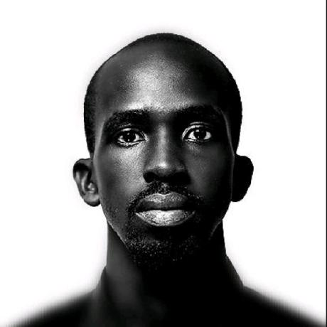

WEB DEVELOPMENT · DIGITAL DESIGN
A professional website for Asmahaney Saad, presenting her work across law, leadership and social impact.
SOFTWARE DEVELOPER & PRODUCT DESIGNER
Hi, I’m Harrison Kangaho. I bring design and code together to turn complex ideas into clear, human experiences.
Based in Kampala, Uganda

Ideas into interfaces.
Interfaces into impact.From my time at Stre@mline
healthcare institutions
using the EMR I contributed to
product mockups
created for development
feature requirements
defined with teams
01 / RECENT & SELECTED WORK
A few things I’ve helped shape,
from first idea to everyday use.
WEB DEVELOPMENT · DIGITAL DESIGN
A professional website for Asmahaney Saad, presenting her work across law, leadership and social impact.
SOFTWARE DEVELOPMENT · WEB APPLICATION
A mobile money management system for cash, float, agents and reconciliation across MTN and Airtel.
SOFTWARE DEVELOPMENT · RETAIL SYSTEMS
A shop management system bringing inventory, point of sale, deliveries and reporting into one workspace.
SOFTWARE DEVELOPMENT · PRODUCT DESIGN
Building, refining and designing an EMR used across 80+ healthcare institutions.
SOFTWARE DEVELOPMENT
A web app for making testimony recording and transcription easier.
WEB DEVELOPMENT · VISUAL DESIGN
A static website for Hats Off Animation, built around the studio’s identity.
02 / A BIT ABOUT ME
I’m a software developer and product designer with a Computer Science background and experience across healthcare technology, digital products and visual design.
At Stre@mline, I moved between code, product requirements, interface design and user training. That experience shaped how I work: understand the person, simplify the problem, then build with care.
I also founded QOL Design, helping brands find a distinct visual voice.
More about my journeyMY TOOLKIT
JavaScript · Python · PHP
React · Next.js · Node.js · Laravel
MySQL · Git
UI/UX · Prototyping · User journeys
Figma · Framer
Illustrator · Photoshop · Canva
Product requirements · User testing
Design-to-development collaboration
User training · Visual storytelling
03 / THE JOURNEY
A foundation in engineering.
A practice built around people.
Stre@mline Health Tech
From associate to product designer: requirements, mockups, feature testing and collaboration with healthcare clients. Alongside this, I supported onboarding and training.
Stre@mline Health Tech
Contributed to building and maintaining the EMR, improving performance and supporting three major product updates.
Shenyang University, China
The technical foundation behind my approach to systems, software and problem-solving.
HAVE SOMETHING IN MIND?